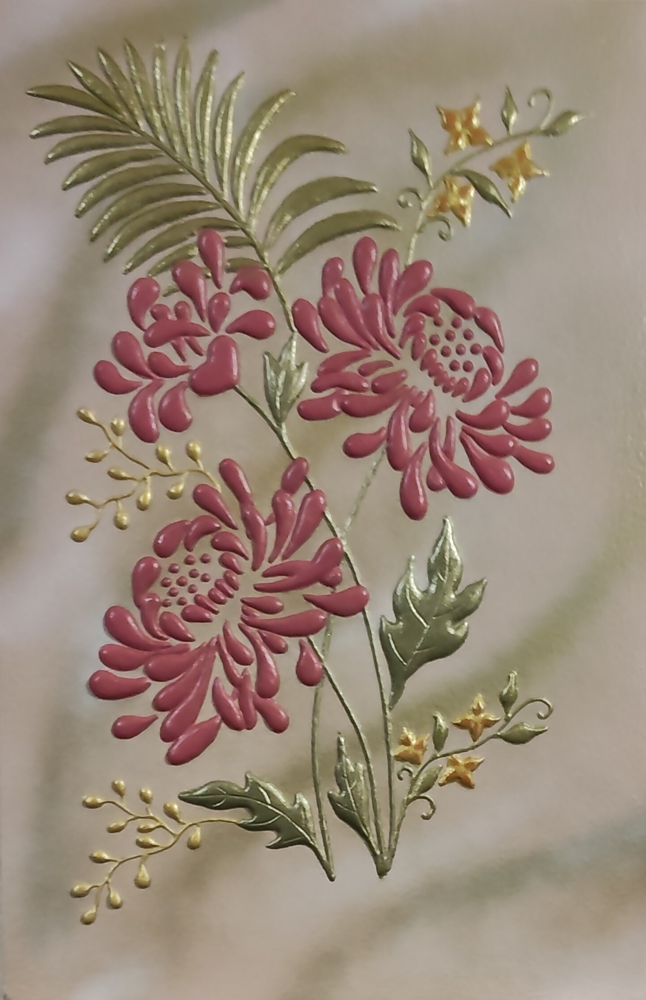

NICOLETA FILIP ART
CRISANTEMOS
Composición floral en relieve protagonizada por crisantemos, donde el volumen, la textura y el tratamiento del color construyen una presencia ornamental.
Sobre la obra
CRISANTEMOS presenta una composición floral protagonizada por flores de crisantemo y elementos vegetales trabajados en relieve.
El volumen de los diferentes elementos aporta profundidad a la composición y permite que la luz destaque las texturas y matices de la superficie.
Presentación artística
La obra combina relieve, textura y color para construir una composición floral de carácter ornamental. El tratamiento volumétrico de las flores aporta dinamismo y profundidad al conjunto.
Ficha técnica
- Año
- 2026
- Dimensiones
- 40 × 60 cm
- Soporte
- Madera
- Técnica
- Técnica estándar de pasta de relieve, pintura acrílica, aerosol metalizado y barniz protector.
- Categoría
- Floral
Si deseas recibir información sobre esta obra, puedes solicitarla directamente.
SOLICITAR INFORMACIÓN →